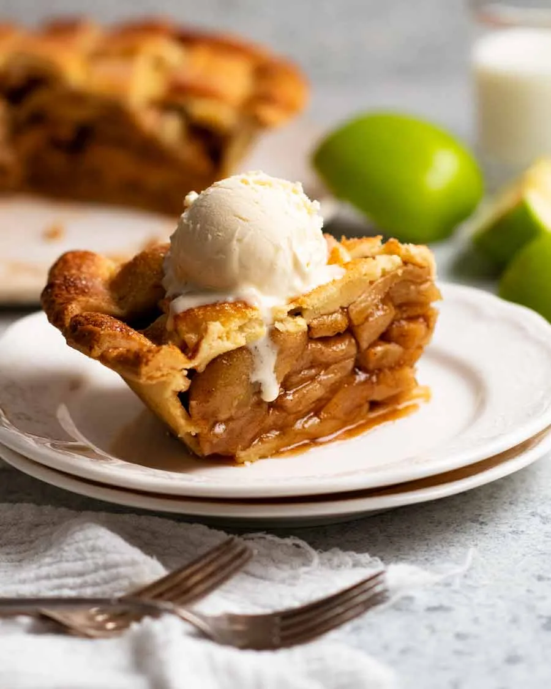

Delicious Apple Pie Recipe
Prep Time: 30 mins | Cook Time: 1 hr | Servings: 8
Ingredients:
- Filling: 6 cups peeled, sliced apples (e.g., Granny Smith), ¾ cup sugar, 2 tbsp flour, 1 tsp cinnamon, ¼ tsp nutmeg, 1 tbsp lemon juice.
- Crust: 2 pre-made pie crusts or your favorite recipe.
- 1 egg (beaten, for brushing).
Instructions:
- Prepare Filling: Toss apples with sugar, flour, cinnamon, nutmeg, and lemon juice.
- Assemble Pie: Place one crust in a 9-inch pie dish. Add apple filling. Top with the second crust, seal edges, and cut slits for ventilation.
- Bake: Brush crust with beaten egg. Bake at 375°F for 50-60 mins, until golden brown.
- Cool: Let cool for 2 hours before serving.
Enjoy your homemade apple pie!